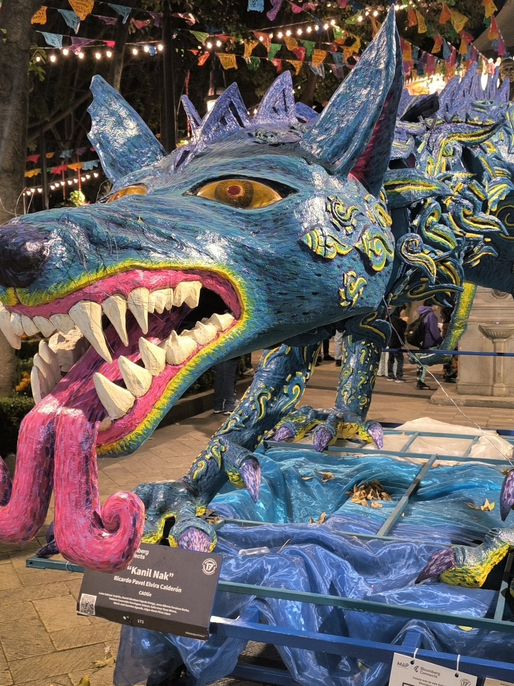

SHAO.
Abner Sánchez
Engineering Manager · CTO · Java Full‑Stack
Plataformas que cuestan menos y hacen más, e IA generativa de la demo a producción.
Engineering Manager · CTO · Java Full‑Stack
Plataformas que cuestan menos y hacen más, e IA generativa de la demo a producción.
